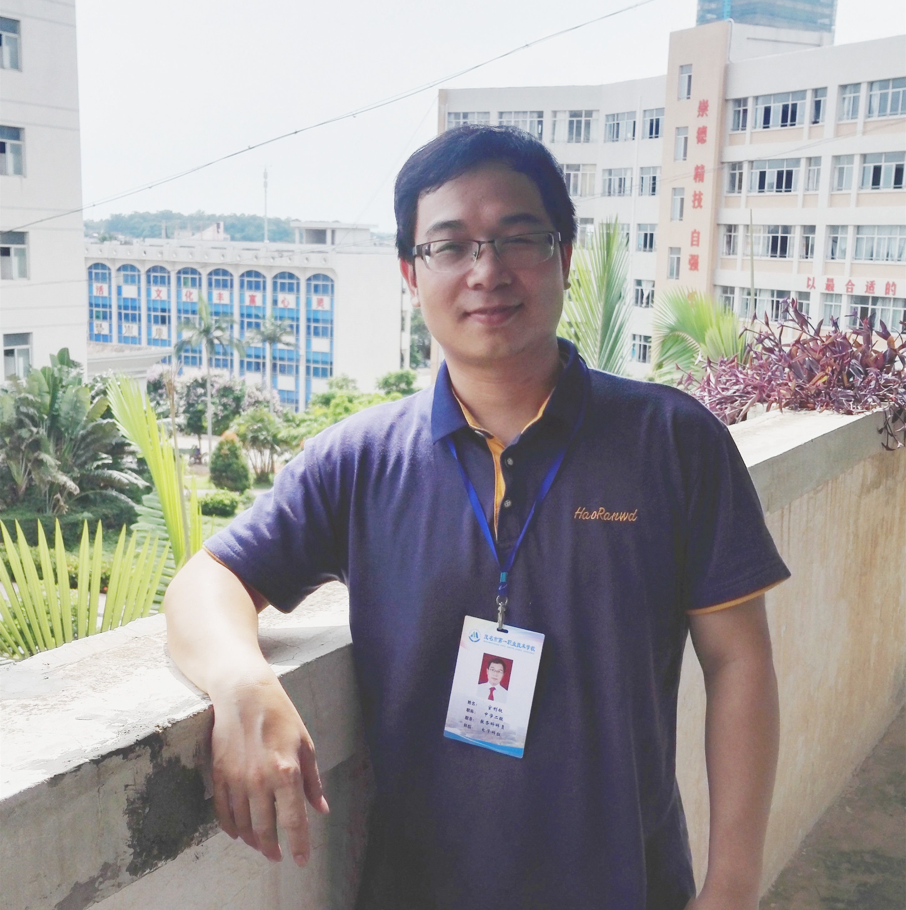

生活英语之情绪表达(微慕课) 自主模式 外语学科
张关中教授 茂名学校外国语文学系 可随时加入 40.1万人 全部课程开放
简介本课程源于<<生活英语听说>>.
章节Feeling
张关中教授 茂名学校外国语文学系 可随时加入 40.1万人 全部课程开放
阳江市第一职业技术学校 信息技术与资源管理处
学校地址：阳江市江城区白沙望牛岗325国道边
邮编：529500 电话：0662-2206638 传真：0662-22062222s